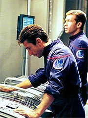
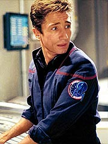
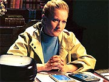
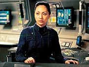
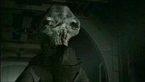
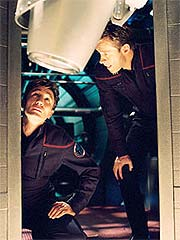
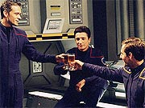
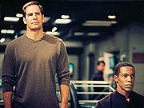
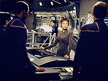
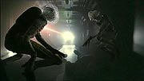

Episdio
anterior | Prximo
episdio
Sinopse:
A Enterprise est instalando um
retransmissor subespacial para permitir contato em tempo real com
a Terra, quando uma nave aliengena se aproxima. Archer tenta
contat-la, mas os estranhos partem, sem ao menos dar uma
resposta. Diante da tentativa fracassada de primeiro contato, o
capito passa a se dedicar a uma outra tarefa --descobrir o prato
predileto do tenente Reed, que faz aniversrio no prximo dia 2
de setembro.

A pedido do capito,
Hoshi Sato localiza os pais de Reed, que esto morando na Malsia.
Archer entra em contato com os dois, mas a comunicao no
muito frutfera: no s eles no sabiam o que Malcolm mais
gostava de comer, como nem sequer sabiam qual era a funo de
seu filho a bordo da Enterprise.
Aps a tentativa fracassada, Archer passa a tarefa a Hoshi Sato.
A alferes tenta obter as informaes procuradas contatando a irm
de Malcolm e seu melhor amigo na Frota Estelar, mas os dois tambm
no conseguem dar nenhuma informao. Ao que parece, Malcolm
to introvertido que ningum consegue realmente saber quem ele
e do que ele gosta. T'Pol sugere a Hoshi que o melhor meio de
conseguir a informao que quer seja falando com o prprio
oficial de armamentos.

Enquanto
isso, a nave aliengena faz uma segunda apario. Ela no
responde aos chamados, como da outra vez, mas agora toma uma
postura agressiva, atacando a Enterprise. A nave sofre uma pane de
diversos sistemas, inclusive o motor de dobra. Dois aliengenas
invadem a nave e conduzem alguns experimentos em tripulantes
humanos. Archer chega a tempo de evitar que eles morram, mas seu
ataque contra os invasores incuo. Mesmo assim, eles decidem
fugir.
Sem capacidade de dobra, o capito comea a se preocupar pela
segurana de sua nave. Ele decide pedir ajuda aos Vulcanos, mas
impossvel estabelecer contato com o Alto Comando, pois os
aliengenas destruram os retransmissores subespaciais recm-colocados
pela Enterprise.
Com dois de seus tripulantes em estado grave na enfermaria, Archer
comea a questionar a deciso de ter partido da Terra
apressadamente para levar o Klingon Klaang a seu mundo natal, e
decide voltar Estao Jpiter para instalar os canhes de
fase que deveriam ter sido colocados em funcionamento antes da
partida. Malcolm Reed e Charles Tucker insistem que no h
necessidade de dar meia-volta, e que a tripulao da Enterprise
seria capaz de fazer a instalao apropriadamente. Archer,
inseguro por suas decises anteriores, quer voltar Terra mesmo
assim, mas autoriza os dois a iniciarem os procedimentos de
instalao.

Reed e Tucker
convocam sua equipe e coordenam trabalho dobrado entre os
tripulantes para colocar os canhes de fase em estado operacional
o mais brevemente possvel. Depois de horas e horas de esforo,
eles acabam conseguindo. Enquanto a Enterprise se prepara para
fazer o primeiro teste do equipamento, em uma lua desabitada,
Hoshi Sato tenta se aproximar de Reed no refeitrio para
descobrir seu prato predileto. A oficial de comunicaes usa
como pretexto o fato de querer convidar o tenente para uma refeio
em seus aposentos, o que Reed interpreta como um
"encontro". Os dois ficam muito constrangidos pela situao,
e Hoshi decide que essa no a melhor abordagem para conseguir
a informao.
Em uma ltima tentativa, ela procura Phlox, que j teve vrias
refeies com o tenente no refeitrio. O mdico no oferece
muitas pistas com suas lembranas dessas ocasies, mas acaba por
recordar que Reed tem alergia a uma enzima encontrada comumente em
abacaxis, mas toma injees regularmente para no ter problemas
com o consumo da fruta. Finalmente Hoshi tem alguma informao
relevante a reportar ao capito, que pretende fazer um
jantar-surpresa para o tenente.

Chega o
momento de os canhes serem testados. Archer pede apenas um
disparo leve, para destruir apenas a poro superior de uma
montanha da lua sobre a qual a Enterprise est orbitando. Quando
Reed dispara os canhes, a potncia vai ao mximo, o que faz
com que a montanha seja praticamente destruda. Ao perguntar
sobre o ocorrido, Archer informado de que o incidente ocorreu
por uma sobrecarga do sistema. T'Pol comunica ao capito que h
leituras anmalas na baa de shuttles dois.
Archer, T'Pol, Tucker e Reed vo at l e descobrem um
equipamento deixado pelos aliengenas, que est conectado e
monitorando todos os seus sistemas --e provavelmente foi a causa
da sobrecarga. O capito manda um "recado" aos aliengenas
por meio de seu equipamento, dizendo que far tudo que for necessrio
para defender a Enterprise. Em seguida, destri a pea.
Nesse momento, a nave hostil volta a aparecer, novamente atacando
a Enterprise. Com os canhes de fase operacionais, Archer
responde fogo, mas no tem sucesso contra os agressores. Ele
pergunta a Reed se no seria possvel causar uma outra
sobrecarga nos canhes, produzindo o mesmo efeito devastador de
antes. Reed e Tucker fazem as modificaes no equipamento e
realizam nova sobrecarga. O disparo derruba os escudos da nave
inimiga.

Em seguida, dois
torpedos disparados pela Enterprise acertam em cheio o alvo,
fazendo com que os aliengenas batam em retirada. Com o teste
mais do que bem-sucedido dos novos equipamentos, Archer decide que
desnecessrio voltar a Terra e segue em frente em sua misso
de explorao. Ele, Reed e Tucker comemoram na sala de
armamentos, tomando um chopp, quando Hoshi chega ao local com um
continer. Ela diz ser a pea que o capito pediu e quando abre
a caixa, tira de dentro um bolo, com os dizeres "Feliz anivrsrio,
Malcolm". O tenente fica constrangido, e ao mesmo tempo
surpreso, ao descobrir que o recheio do bolo de sua fruta
preferida --abacaxi. E a Enterprise segue viagem.
Comentrios:
"Silent Enemy" uma excelente
oportunidade para conhecermos o ambiente a bordo da Enterprise. O
enfoque est muito mais sobre os tripulantes da nave, seus
relacionamentos, sua rotina e seu modo de trabalho do que sobre o
que est acontecendo fora da nave. A presena dos aliengenas
hostis serve s como combustvel para alimentar a evoluo dos
personagens.

Quem
mais sai ganhando dessa vez o oficial de armamentos da
Enterprise, Malcolm Reed. No s a audincia aprende detalhes
factuais de seu passado, como por exemplo a data de seu aniversrio
(2 de setembro), mas tambm h a revelao da verdadeira
personalidade do armeiro, algo mencionado na bblia da srie,
mas pouqussimo trabalhado at ento.
O que descobrimos uma pessoa verdadeiramente introvertida, com
poucos amigos, que acaba, talvez por timidez, mantendo suas relaes
interpessoais estritamente profissionais. Alis, ao que parece,
Reed vive para seu trabalho.
Esse trabalho de desenvolvimento com o personagem consegue ser bem
mesclado ao enredo do episdio, de forma a no transformar a
histria em uma mera coleo de situaes biogrficas de
Reed (alis, de episdios significativos de sua vida pregressa
temos at pouco), mas ainda assim dando incrvel vida ao oficial
de armamentos.

Em termos
simples, fica provado que um episdio voltado a personagem no
precisa ser necessariamente desprovido de ao e de um enredo
mais convencional. Na verdade, fazer os personagens reagirem a uma
dada situao, em vez de simplesmente reagirem uns com os
outros, quando bem executado, o melhor meio de faz-los
crescer.
Foi nesse contexto que Archer tambm saiu ganhando. Sua preocupao
com o lanamento prematuro da Enterprise e o fato de suas decises
(certas ou errados) poderem custar a vida de seus tripulantes comeam
a pesar sobre a conscincia do capito. Sua deciso de voltar
Terra para providenciar a instalao dos canhes de fase
mostra um amadurecimento por parte dele --e uma evoluo por
parte dos roteiristas.
Pode ser que Archer, ainda mantendo sua personalidade
bem-humorada, possa estar caminhando para ganhar um estilo de
comando mais complexo e desenvolto, prximo ao que o capito
Christopher Pike mostrou no primeiro piloto da Srie Clssica,
"The Cage".
A preocupao de Archer com os riscos que imps a seus
tripulantes aparece de forma aguda em "Silent Enemy",
e mostra que o capito tende a ser mais do que "o cara que
toma as decises erradas", como s vezes pareceu em episdios
posteriores a "Broken Bow".

O episdio
tambm fornece insights interessantes na prpria Enterprise, em
termos operacionais. curioso observar a coordenao das
equipes para a instalao dos canhes de fase, feita por Reed e
Tucker. A reunio da equipe, conduzida pelos dois, d um belo
clima sobre como o trabalho a bordo da nave. Tambm
introduzido um fator competitivo interessante entre os engenheiros
de bordo e a equipe da Estao Jpiter. A vontade de Reed e
Tucker de ter o trabalho feito totalmente pela equipe da nave, sem
depender dos engenheiros do complexo da Frota Estelar, mostra uma
coisa ou duas sobre o esprito humano do sculo 22, que depois
seria diludo nos sculos seguintes.
"Silent Enemy" tambm marca como o primeiro episdio
que se prope a desenvolver duas tramas paralelas, que se
costuram no final, estilo muito utilizado em Deep Space Nine.
O enredo principal, claro, tem a ver com a ameaa constante dos
aliengenas hostis que atacam a Enterprise. A trama secundria
envolve a "misso" de descobrir o prato predileto do
tenente Reed. Com esse padro, foi possvel fazer melhor uso dos
personagens secundrios --principalmente Hoshi Sato, a designada
pelo capito "investigao". Apesar de ser uma
tarefa pouco importante, ela ajuda a dar destaque personagem.
E, se no fosse por outra coisa, j valeria sua participao
pela cena que ela tem com Reed no refeitrio. A tentativa de
descobrir o prato favorito dele convidando-o para comer em seus
aposentos e o constrangimento do tmido tenente ao achar que
Hoshi estava interessada nele garante boas risadas.

Em compensao,
Phlox, T'Pol e Mayweather passam o episdio praticamente
esquecidos. O primeiro ainda consegue participar ativamente da
trama secundria, ainda que pouco. T'Pol faz figurao. E
Mayweather, nem isso. O pobre alferes e piloto da Enterprise no
conseguiu aparecer nem na comemorao do aniversrio de Reed,
mostrada ao fim do episdio, que reuniu todos os outros oficiais
seniores humanos na sala de armamentos.
Uma cena interessante, que provoca uma risada at involuntria,
ocorre quando os tripulantes da Enterprise na ponte comeam a se
contorcer aps ouvir a suposta "comunicao" aliengena
--um zumbido de alta intensidade. impossvel ver Archer e seus
colegas tampando os ouvidos desesperadamente e no se lembrar de
sequncias semelhantes to comuns em episdios da Srie Clssica.
um dos momentos em que impossvel no lembrar a maior
afinidade de Enterprise com a primeira srie de Jornada
do que com as produes posteriores.

E por
falar nos ataques nave, os tais "inimigos
silenciosos" aparentemente no vieram para ficar. Sua
representatividade enquanto personagens foi to pouco marcante
que at para instrurem a Enterprise a se render eles utilizaram
uma gravao feita pelo prprio Archer. Criados totalmente por
computador, os aliengenas cinzas podem at ser bonitos, mas esto
longe de ser os precursores de uma raa importante e cativante no
universo de Jornada nas Estrelas. Depois de apanharem da
Enterprise, eles provavelmente no voltaro nunca mais srie.
O que vai ficar certamente o mais novo upgrade da nave --os
poderosos canhes de fase. Precursores dos bancos feisers do sculo
23 e 24, esses canhes so realmente impressionantes. Caram
muito bem srie, e deixaram a Enterprise muito menos indefesa.
Apesar de serem uma boa adio (at em efeitos visuais, como se
pode ver nesse episdio), talvez eliminem um dos fatores mais
interessantes da srie --a fragilidade da nave. Mas tudo vai
depender de como os roteiristas vo lidar com o equipamento. Foi
interessante a Enterprise precisar de uma sobrecarga para vencer
os aliengenas, mas bom que o recurso no seja utilizado todo
dia. At porque tivemos de lidar com uma dose de tecnobaboseira
um pouco acima do limite saudvel nesta sequncia.
Tecnicamente, o episdio conta com a hbil direo de Winrich
Kolbe. Os efeitos especiais abundam no episdio, que conta com
aliengenas feitos por computador, destruio de montanhas em
crateras lunares e tomadas mais bonitas do que nunca da NX-01, mas
o fator que mais se destaca em termos de ps-produo a msica.
No que ela seja perfeita, mas tem uma coisa que poucas trilhas
sonoras das sries modernas de Jornada tm: presena.
Algumas vezes isso funciona negativamente, principalmente nas
cenas da primeira tentativa de contato com a nave aliengena. Mas
h momentos em que ela eleva as tomadas a um outro nvel, como
na invaso aliengena e no momento em que a Enterprise vai
testar os recm-instalados canhes de fase. O crdito vai todo
para o compositor Velton Ray Bunch.
No fim das contas, o episdio ainda traz uma discusso
interessante sobre a necessidade de se aceitar riscos quando se
lida com explorao espacial. A abordagem do tema muito mais
aproximada da dos nossos astronautas contemporneos do que de
Kirk, Picard, Sisko ou Janeway, ajudando mais uma vez a
estebelecer um estilo prprio para a srie e nos lembrar de que Enterprise
muito mais contempornea do que as outras sries do franchise.
Citaes:
Mary Reed - "The
Reeds have been navy men for generations."
("Os Reeds foram homens da Marinha por geraes.")
Stuart Reed - "Until Malcolm decided to join Starfleet. I
suppose the ocean wasn't big enough for him."
("At Malcolm decidir se juntar Frota Estelar. Eu suponho
que o oceano no era grande o suficiente para ele.")
Archer - "I thought you were going to upgrade this."
("Pensei que voc ia atualizar isso.")
Tucker - "That is the upgrade. Would you want, I could
change the color..."
("Essa a atualizao. Se quisesse, eu poderia mudar a
cor...")
Archer - "Well... It is being nice talking to you. Let's
do this again sometime."
("Bem... foi timo falar com vocs. Vamos fazer isso de
novo qualquer hora.")
Archer - "This time, we won't be leaving before we are
ready."
("Desta vez, no sairemos at estarmos prontos.")
Tucker - "Are your ears a little pointer than usual?"
("Suas orelhas esto um pouco mais pontudas que de
costume?")
Tucker - "In the old days, astronauts were in rockets with
millions of liters of hydrogen burning under their seats. Do you
think they said, 'Gee, I'd love to go to the Moon today, but it
seems a little risky'. I think if you ask anyone on board whether
they thought this mission was worth the risk, you'd get the same
answer from everyone of them."
("Nos velhos tempos, os astronautas ficavam em foguetes com
milhes de litros de hidrognio queimando sob seus assentos. Voc
acha que eles diziam, 'Cara, adoraria ir Lua hoje, mas parece
meio arriscado'. Eu acho que se voc perguntar a qualquer um a
bordo se eles acham que essa misso valia a pena, voc teria a
mesma resposta de todos eles.")
Archer - "I assume you've planted that device because you
wanted to learn more about us. I'd be happy to give you a quick
lesson. We're not here to make enemies. But just because we are
not looking for a fight, it doesn't mean we'll run away from one.
You may think you've let us defenseless, but let me tell you
something about humans: we don't give up easily. We'll protect
Enterprise, anyway we can."
("Presumo que vocs plantaram esse aparelho porque queriam
aprender mais sobre ns. Eu fico feliz em dar uma liozinha rpida.
No estamos aqui para fazer inimigos. Mas s porque no estamos
procurando briga, no quer dizer que fugiremos de uma. Vocs
podem pensar que nos deixaram indefesos, mas deixe-me dizer uma
coisa sobre humanos: no desistimos fcil. Protegeremos a
Enterprise, do jeito que pudermos.")
Trivia:
 Apesar de ser o 11 episdio produzido, e os eventos por ele
descritos acontecerem antes de "Cold
Front", "Silent Enemy" foi exibido
depois, como o dcimo segundo da srie. A ordem foi restaurada
aqui para manter coerncia cronolgica.
Apesar de ser o 11 episdio produzido, e os eventos por ele
descritos acontecerem antes de "Cold
Front", "Silent Enemy" foi exibido
depois, como o dcimo segundo da srie. A ordem foi restaurada
aqui para manter coerncia cronolgica.
Dominic Keating chegou a comentar brevemente o episdio antes da
exibio. "Temos um episdio vindo a, 'Silent Enemy',
onde damos uns belos chutes no traseiro", disse.
A atriz britnica Jane Carr (Mary Reed) j apareceu em vrias sries
americanas, como "Becker" e "Murphy Brown", alm
de ter interpretado a mulher de Lomdo Timov, no episdio "Soul
Mates", de "Babylon 5". Guy Siner (Stuart Reed)
famoso no Reino Unido por sua participao na comdia da rede
BBC "Allo Allo", como o tenente Huber Gruber. Ele tambm
j teve papis em "Babylon 5" e "Dr. Who".
Paula Malcomson (Madeline Reed) apareceu em filmes como "The
Green Mile" e "A.I. - Inteligncia Artificial".
John Rosenfeld (Mark Latrelle) um dos dois nicos atores desse
episdio a ter aparecido antes em Jornada, tendo
interpretado um tcnico em "Friendship One", de Voyager.
Ele tambm j fez participaes em "ER" e "Buffy
the Vampire Slayer". Robert Mammana (engenheiro) j apareceu
como um segurana da Voyager em "Workforce".
Ficha
tcnica:
Escrito por Andre Bormanis
Direo de Winrich Kolbe
Exibido em 16/01/2002
Produo: 012